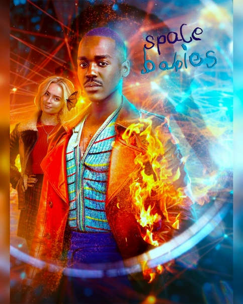
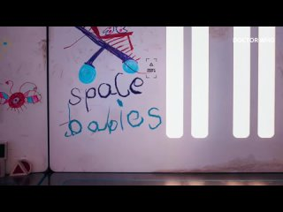

MVO [TVShows] 2.0 + 5.1, DUB [IRONVOICE], MVO [GoLTFilm], [LE-Production], [ColdFilm], [RUDUB], [NewStudio], [Jaskier], DVO [KerobTV] или Original [ENG]
Субтитры: Русские, форсированные или
Русские {TrueTransLate} - на английской дорожке
 Все 8 серий |
Space babies
Дата выхода: 11 мая 2024
Формат: 46-минутный эпизод
| Варианты озвучек: | * Разные: смотрите по инструкции |
|---|---|
| Скачивание и просмотр: |
Руби познаёт удивительные тайны Доктора, который отвозит её в далёкое будущее. Вместе они обнаруживают детскую ферму, которой заправляют малыши. Но смогут ли они спастись от ужасного Бугимена?

Тизер:
